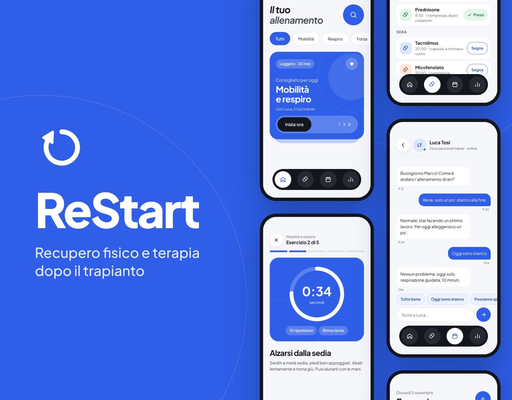

ReStart
- Tipo
- App mobile
- Contesto
- Tesi di laurea magistrale
- Strumenti
- Figma, Illustrator, After Effects
- Anno
- 2022

Problema
Dopo un trapianto il recupero riguarda tutto il corpo. Chi è stato trapiantato riceve informazioni poco chiare su quanta attività fisica può fare, segue una terapia con più farmaci al giorno, vede il trainer solo di persona e trova app di fitness che non tengono conto della sua fragilità.
Progetto
Un’app per due persone che lavorano insieme: chi è stato trapiantato e il personal trainer che lo segue. 12 schermate in tre flussi, allenarsi, curarsi e restare in contatto. Durante gli esercizi guidati la barra di navigazione sparisce, per ridurre distrazioni ed errori.
Risultato
Esercizi guidati con un riscontro che arriva al trainer, i farmaci del giorno con promemoria e uno storico da mostrare al medico, una chat con il trainer. Il marchio è un cerchio quasi chiuso: dopo il trapianto non si torna al punto di partenza, si riparte in avanti. Il progetto nasce dall’esperienza di mio fratello, trapiantato di rene da bambino.